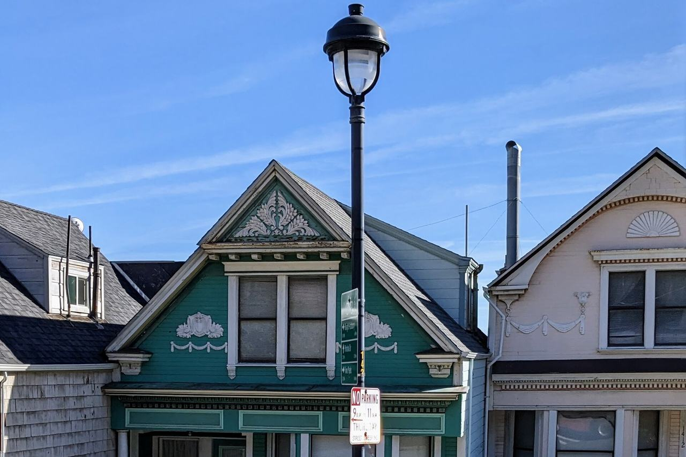

Corbett Heights
The hillside neighborhood around Corbett Avenue, between Market Street and Twin Peaks, north-west of the Castro. Its streets include Corbett Avenue, Ord, Hattie, Danvers, Mars, Romain and Museum Way.

Map
Named buildings and landmarks
-
1
-
2

How the land was divided
McKee Subdivision40 lots; Clara St renamed Ord, 1909
Park Lane Tractfrom 1885
Street numbers changed1909
Because numbers and some street names changed in 1909, an address in an older record often does not match today's — 1200 Ashbury became 1200 Clayton, and 110 Clara became 110 Ord.
Streets documented so far
- Carmel Street
1 building, built 1965. - Clayton Street
17 buildings, built 1895–1961; 1 in the Auxiliary Water Supply System (Discontiguous). - Corbett Avenue
7 buildings documented — from a 1905 flat above the earthquake refugee camp to post-war infill. - Crestline Drive
1 building, built 1964. - Danvers Street
2 buildings documented — survivors of the corner the Market Street extension erased. - Hattie Street
2 buildings, built 1900–1904. - Levant Street
1 building, built 1929. - Mars Street
10 buildings documented — a short, steep street photographed since about 1895 and rebuilt in the 1920s. - Museum Way
The Corona Heights museum the city dedicated to Josephine Randall in 1951. - Ord Court
1 building, built 1906. - Ord Street
9 buildings, built 1880–1932. - Romain Street
5 buildings, built 1935–1936. - Shrader Street
1 building, built 1907.
Parks and public spaces
- Corona Heights Park
Neighborhood park or playground, 13.2 acres. - Peixotto Playground
Neighborhood park or playground, 35,719 sq ft. - States Street Playground
Neighborhood park or playground, 2.9 acres. - Tank Hill
Neighborhood park or playground, 3.0 acres.
Historic districts here
Adjacent neighborhoods
The Castro lies downhill to the south-east; the two share the city's Castro/Upper Market boundary, which local histories divide at this hillside. Haight Ashbury is north, reached by Clayton and Ashbury Streets, and the Inner Sunset west over the Twin Peaks ridge.